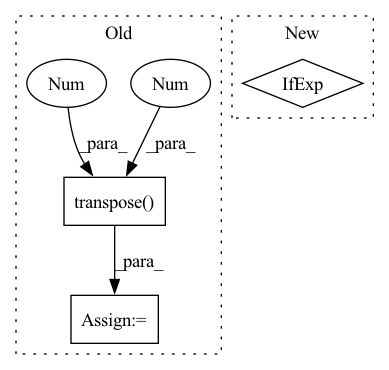

Pattern ID :27338
Before Change
heatmap: np.ndarray = cmap(heatmap) // (N, H, W, C) TODO: linting problem
else: // cmap: [256, 3|4] uint8
assert isinstance(cmap, torch.Tensor) and cmap.shape[0] == 256
heatmap = cmap[(heatmap * 255).long()].transpose(1, 3).transpose(2 , 3 )
heatmap = heatmap.float() / 255
// Note that C==4 for most cmaps
heatmap = torch.as_tensor(heatmap.transpose(0, 3, 1, 2)) // (N, C, H, W)
return heatmap[0] if squeeze_flag else heatmapAfter Change
assert cmap.shape[0] == 256 // cmap: [256, 3|4]
heatmap = cmap[(heatmap * 255).long()] // (N, H, W, C) uint8
heatmap = heatmap.transpose(1, 3).transpose(2, 3).float() // (N, C, H, W)
heatmap = heatmap / 255 if heatmap.max() > 1 else heatmap // (N, C, H, W) float
return heatmap[0] if squeeze_flag else heatmap
In pattern: SUPERPATTERN
Frequency: 4
Non-data size: 3
Instances Fragment ID: 81250647
Project Name: ain-soph/trojanzoo
Commit Name: 80e74988c8d77c00322fd1144f83d6ff4e5ee2cb
Time: 2020-12-31
Author: ain-soph@live.com
File Name: trojanvision/utils/__init__.py
M Class Name: AnonimousClass
N Class Name: AnonimousClass
M Method Name: apply_cmap(2)
N Method Name: apply_cmap(2)
M Parent Class:
N Parent Class:
M File Name: trojanvision/utils/__init__.py
N File Name: trojanvision/utils/__init__.py
M Start Line: 14
M End Line: 27
N Start Line: 15
N End Line: 29
Before Change
pe[:, 1::2] = torch.cos(position * div_term) // torch.Size([58, 512])
pe = pe.unsqueeze(0).transpose(0 , 1 ) // torch.Size([58, 1, 512])
// register that pe is not a model parameter
self.register_buffer("pe", pe)
After Change
self.batch_first = batch_first
self.x_dim = 1 if batch_first else 0
// copy pasted from PyTorch tutorial
position = torch.arange(max_seq_len).unsqueeze(1)
Fragment ID: 81250645
Project Name: kaspergroesludvigsen/influenza_transformer
Commit Name: 1bc695a78fda0b9903e3d6f874a17f0455947ee6
Time: 2022-08-15
Author: 37772085+KasperGroesLudvigsen@users.noreply.github.com
File Name: positional_encoder.py
M Class Name: PositionalEncoder
N Class Name: PositionalEncoder
M Method Name: __init__(5)
N Method Name: __init__(4)
M Parent Class: nn.Module
N Parent Class: nn.Module
M File Name: positional_encoder.py
N File Name: positional_encoder.py
M Start Line: 44
M End Line: 54
N Start Line: 24
N End Line: 54
Before Change
f = fun(p)
j = jac_fun(p)
g = torch.bmm(j.transpose(-2, -1), f[..., None])[..., 0]
H = torch.bmm(j.transpose(-2 , -1 ) , j)
p_list = [p]
while len(p_list) < max_iter:
h = -l*torch.linalg.lstsq(H, g, rcond=None, driver=None)[0]//-l*torch.bmm(torch.pinverse(H), g)[..., 0]//After Change
assert len(j.shape) == 4, "jacobian tensor is supposed to have 4 dims"
// use weights of ones as default
wvec = torch.ones(f.shape[1], dtype=p.dtype, device=p.device) if wvec is None else wvec
// compute gradient and Hessian costs
gc = torch.einsum("bcnp,bcnp->bcp", j, f[..., None]) Fragment ID: 81250657
Project Name: hahnec/torchimize
Commit Name: 71d4a553c258e912862f87311fc88cd5cadb49d1
Time: 2022-05-16
Author: christopher.hahne@unibe.ch
File Name: torchimize/functions/gna_fun_parallel.py
M Class Name: AnonimousClass
N Class Name: AnonimousClass
M Method Name: lsq_gna_parallel(10)
N Method Name: lsq_gna_parallel(9)
M Parent Class:
N Parent Class:
M File Name: torchimize/functions/gna_fun_parallel.py
N File Name: torchimize/functions/gna_fun_parallel.py
M Start Line: 43
M End Line: 56
N Start Line: 12
N End Line: 73
Before Change
slide_image = slide_dict[SlideKey.IMAGE]
assert isinstance(slide_image, np.ndarray), f"slide image must be a numpy array, got {type(slide_image)}"
slide_image = slide_image.transpose(1 , 2, 0 )
ax0.imshow(slide_image)
ax1.imshow(slide_image, alpha=0.5)
for ax in (ax0, ax1):After Change
:return: matplotlib figure of the heatmap of the given tiles on slide.
fig = plt.figure(constrained_layout=True)
gs = fig.add_gridspec(2 if not extra_slide_dict else 3, 1)
ax0 = fig.add_subplot(gs[0, 0])
ax1 = fig.add_subplot(gs[1, 0], sharex=ax0, sharey=ax0)
cax = ax1.inset_axes([1.02, 0, 0.03, 1], transform=ax1.transAxes) // add colorbar axis Fragment ID: 81250655
Project Name: microsoft/hi-ml
Commit Name: 7d96412236b0143b2f97ce452c8cdcd8b353bf50
Time: 2023-02-01
Author: 37396332+kenza-bouzid@users.noreply.github.com
File Name: hi-ml-cpath/src/health_cpath/utils/viz_utils.py
M Class Name: AnonimousClass
N Class Name: AnonimousClass
M Method Name: plot_heatmap_overlay(7)
N Method Name: plot_heatmap_overlay(6)
M Parent Class:
N Parent Class:
M File Name: hi-ml-cpath/src/health_cpath/utils/viz_utils.py
N File Name: hi-ml-cpath/src/health_cpath/utils/viz_utils.py
M Start Line: 179
M End Line: 192
N Start Line: 166
N End Line: 210